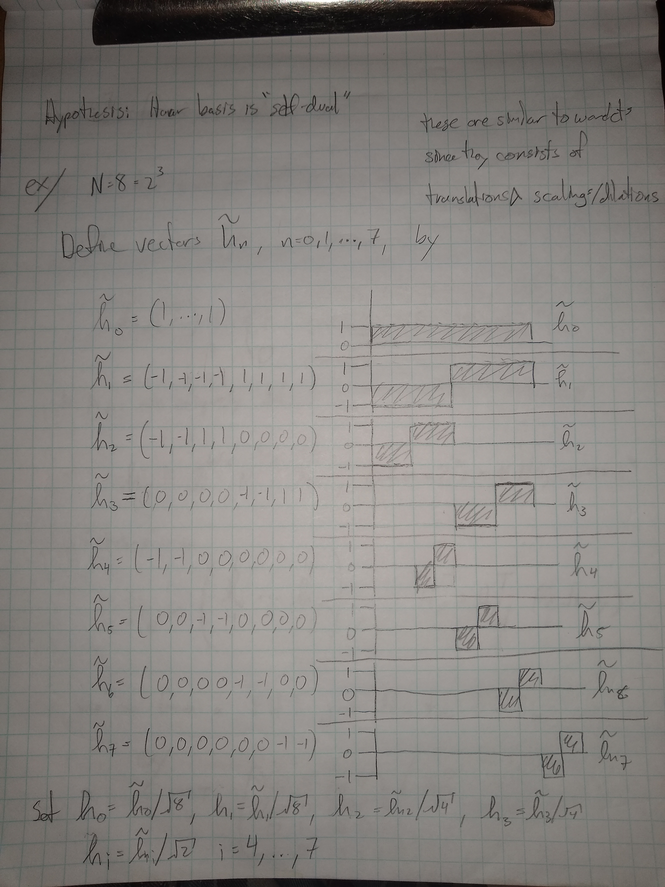

Recall the Fourier basis \(\{e_n\}_{n=0}^{N-1}\) given by
\[e_n(k)\equiv\frac{1}{\sqrt N}e^{\frac{2\pi ikn}{N}}\equiv\frac{1}{\sqrt N}\omega^{kn}\]
\[e_n\equiv\frac{1}{\sqrt N}\left(\begin{matrix}1\\\omega^n\\\omega^{2n}\\\vdots\\\omega^{(N-1)n}\end{matrix}\right).\]
The standard basis:
\[\{S_n\}\equiv\left\{\left(\begin{matrix}1\\0\\\vdots\\0\end{matrix}\right),\cdots,\left(\begin{matrix}0\\\vdots\\0\\1\end{matrix}\right)\right\}\]
is as localized as possible.

The \(N\)th Haar basis for \(\mathbb{C}^N\) is given by:
\[N=2^i, \ 0\leq k<i, \ 0\leq m<2^k\]
\[\tilde h_n(l)\equiv\left\{\begin{matrix} -1 & m N2^{-k}\leq l<(m+\frac{1}{2})N2^{-k} \\ 1 & (m+\frac{1}{2})N2^{-k}\leq l<(m+ 1 )N2^{-k} \\ 0 & \text{otherwise} \end{matrix}\right.\]
\(k,m\) uniquely defined by \(n=2^k+m, \ 1\leq n<N\).
\[h_n=2^{k/2}N^{-1/2}\tilde h_n, \ 0\leq n=2^k+m\leq N-1, \ 0\leq m\leq 2^k\]
\[H_N\equiv\left(\begin{matrix}\vdots & \vdots & \vdots \\ h_0 & \cdots & h_{N-1} \\ \vdots & \vdots & \vdots\end{matrix}\right)\]
\[{H_N}^{-1}={H_N}^\top\]
so its unitary
\[{H_4}^\top=\left(\begin{matrix} \frac{1}{\sqrt 2} & 0 & \frac{1}{\sqrt 2} & 0 \\ -\frac{1}{\sqrt 2} & 0 & \frac{1}{\sqrt 2} & 0 \\ 0 & 1 & 0 & 0 \\ 0 & 0 & 0 & 1 \end{matrix}\right)\left(\begin{matrix} {H_2}^\top & 0 \\ 0 & {H_2}^\top \end{matrix}\right)\]